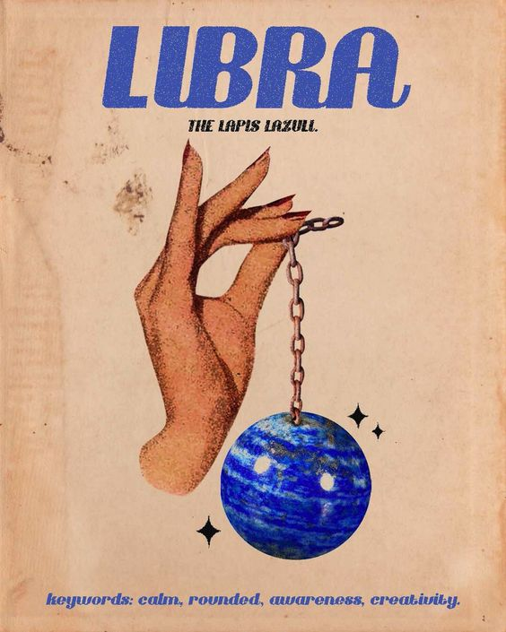

Personality Traits:
Libra, symbolized by the Scales, is known for its harmony-seeking nature and love of beauty. Ruled by Venus, the planet of love and aesthetics, Libras are drawn to balance, fairness, and elegance in all aspects of life. They possess a natural charm and social grace, making them excellent diplomats and peacemakers in various situations. Libras value relationships deeply and strive to create a harmonious atmosphere in their personal and professional lives. Libras are often admired for their sense of style and appreciation for art, music, and culture. They have a keen sense of justice and are motivated by a desire for fairness and equality. While their diplomatic nature allows them to see multiple perspectives, it can sometimes lead to indecisiveness as they weigh the pros and cons of every situation.
Personality Traits:
- Harmonious and Diplomatic: Libra faces challenges head-on, fearlessly embracing the unknown.
- Charming and Sociable: Endowed with boundless energy, Libra exudes a vibrant and enthusiastic aura.
- Aesthetic and Appreciative of Beauty:Libra values freedom and autonomy, thriving in roles that allow self-expression.
- Just and Fair-minded: The impulsive nature of Libra leads to spontaneous actions and decisions.
Likes:
Libras enjoy socializing and surrounding themselves with beauty. They appreciate engaging in activities that allow them to express their creativity and aesthetic sensibilities, such as art exhibitions, music concerts, or elegant gatherings. Libras value meaningful connections and are drawn to people who share their appreciation for balance and harmony in relationships. They also have a love for intellectual conversations and are often stimulated by thought-provoking discussions.
Career and Ambitions:
Libras excel in roles that require diplomacy, communication, and a sense of aesthetics. Careers in law, mediation, public relations, and the arts align well with their natural talents. Their ability to see multiple sides of a situation makes them valuable team members and leaders. Libras may find fulfillment in professions that allow them to contribute to creating a fair and harmonious environment. Ambitiously, they seek success in their chosen fields while maintaining a sense of balance in their personal and professional lives.
I Recommend watching this!
Get to know your fellow Libra friends more!